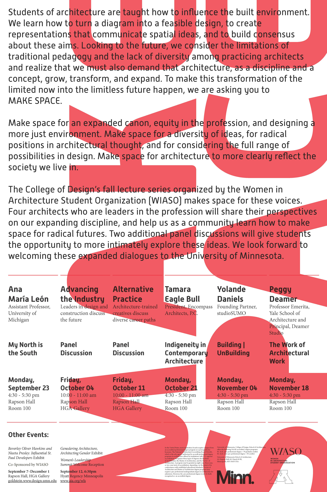
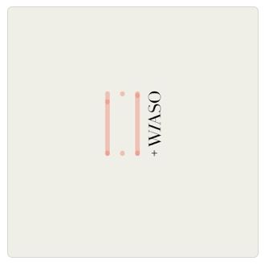

Women in Architecture Student Organization (WIASO)
University of Minnesota-Twin Cities
organizer, founder - 2018-2020
In 2018, I started WIASO with other graduate students at UMN. From 2018 to 2020 we worked together to put on exhibitions, events, and publish writings in order to advance our mission statement. This is a collection of relevant links to the organization and work I completed with the group.
ONLINE AT:
WIASO on UMN Gopherlink
WIASO on Facebook
WIASO on Instagram
In Fall 2019, WIASO student organizers curated and planned the annual lecture series at University of Minnesota SoA.


Interview with lecture series guest, Peggy Deamer, conducted by Mary Dahlman Begley. Link to episode on Apple Podcasts.